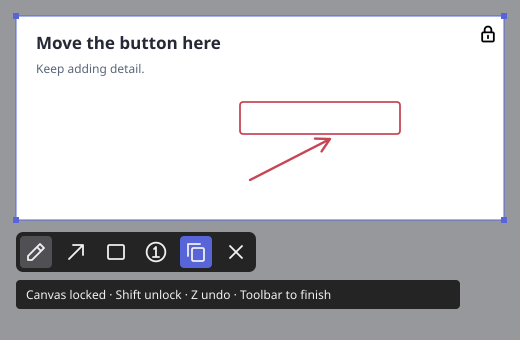
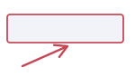
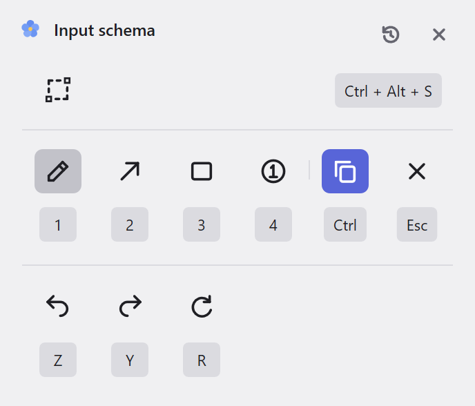

Myosotis 1.0.0 — Capture it before you even realize
Draft previewPress Ctrl+Alt+S, select a screenshot or white canvas, draw what you mean, and copy it into your chat, document, or issue.
Since 0.2.1, Myosotis adds protection for longer drawing sessions, optional local PNG saving, and background PNG encoding after the capture closes.
Keep drawing until you're ready
Press Shift to lock the canvas. Double-clicks, pen double-taps, and repeated Space taps keep drawing instead of finishing. Use the toolbar's Copy or Cancel button to finish, or press Shift to unlock.
A double-tap can stay a drawing.
The same repeated-tap gesture, with canvas lock enabled in 1.0.0.
The completion gesture copies
the current image.
Reopen a capture to keep sketching.

Keep drawing. Finish with toolbar Copy.
Copy and Cancel keyboard shortcuts are disabled while locked. Each capture starts unlocked, and the padlock stays out of your finished image.
Keep a copy
Enable Save to local in the tray menu to save each successfully copied capture as a PNG in Pictures\Screenshots. Saving runs in the background, never overwrites existing files, and is off by default.
Copy once. Keep the PNG too.
The selected area and annotations go to both destinations.

Pictures\Screenshots\Screenshot YYYY-MM-DD HHMMSS.png
Canceled captures create no file. Saved PNGs remain until you delete them; synchronized Pictures folders follow your sync service's settings.
Capture before you even realize
PNG compression now runs in the background after the overlay closes. Apps accepting bitmap clipboard data can paste immediately; apps requesting PNG before encoding finishes still wait for it.
Encoding moves past the close.
Completion order, without a timing or speedup claim.
Small refinements, shown up close
A simpler tray menu, easier shortcut-window interaction, and small alignment improvements round out the release.

Controls close at hand.
- Drag Input schema from non-control areas.
- Dismiss with Escape outside recording, or switch windows.
- Subtle transitions respect Windows' animation preference.
- Refined header alignment, icon sizing, and single-digit numbered marks.
Download and update
Windows 11 x64 · Portable · No additional runtime required
Quit the older Myosotis from its notification-area menu, extract the release ZIP, and run Myosotis/myosotis.exe.
If you use Start at login, turn it off before moving or deleting the previous portable copy, then enable it from the new executable's location.